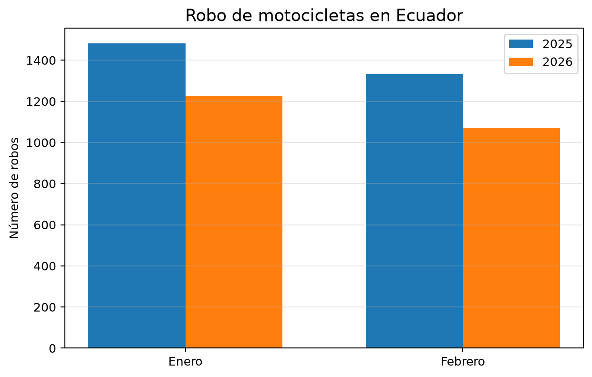

Seguridad y robo de motocicletas en Ecuador
Índice
1. Introducción
El robo de motocicletas forma parte de los delitos de mayor connotación registrados en Ecuador. El análisis de estas cifras permite comparar el comportamiento del delito entre periodos equivalentes y presentar los resultados mediante tablas y gráficos estadísticos.
Esta página utiliza información oficial publicada por el Instituto Nacional de Estadística y Censos (INEC), con datos provenientes del Sistema Integrado de Actuaciones Fiscales (SIAF) de la Fiscalía General del Estado.
2. Definición de robo de motos
El INEC define el robo de motos como el evento en el que una persona o grupo de personas, mediante amenazas, violencia o uso de la fuerza, sustrae totalmente una motocicleta en un lugar público o privado. En esta categoría se consideran motos, pasolas, cuadrones y tricimotos.
3. Fuente y procesamiento de los datos
Los valores fueron tomados de la publicación Estadísticas de Seguridad Integral: delitos de mayor connotación psicosocial, febrero de 2026.
Para el análisis se seleccionaron los registros nacionales de enero y febrero de 2025 y de enero y febrero de 2026.
El procesamiento realizado fue el siguiente:
- Identificación de los valores mensuales de robo de motos.
- Organización de los datos por año y mes.
- Cálculo del total acumulado de enero y febrero para cada año.
- Cálculo de la diferencia absoluta entre ambos periodos.
- Cálculo de la variación porcentual.
- Elaboración de una tabla comparativa y un gráfico de barras.
4. Resultados
4.1. Datos mensuales
| Periodo | Robos de motos |
|---|---|
| Enero 2025 | 1.481 |
| Febrero 2025 | 1.333 |
| Enero 2026 | 1.226 |
| Febrero 2026 | 1.072 |
4.2. Comparación acumulada
| Indicador | Resultado |
|---|---|
| Total enero-febrero de 2025 | 2.814 |
| Total enero-febrero de 2026 | 2.298 |
| Diferencia absoluta | -516 |
| Variación acumulada | -18,3% |
Durante enero y febrero de 2026 se registraron 516 robos de motos menos que en el mismo periodo de 2025. Esto representa una reducción acumulada del 18,3 %.
4.3. Gráfico estadístico

Figura 1: Comparación mensual del robo de motocicletas entre 2025 y 2026.
El gráfico muestra que tanto enero como febrero de 2026 presentaron menos robos de motocicletas que los mismos meses de 2025.
Enero pasó de 1.481 a 1.226 casos, mientras que febrero disminuyó de 1.333 a 1.072 casos.
5. Análisis
En enero de 2026 se registraron 255 casos menos que en enero de 2025, equivalentes a una reducción aproximada del 17,2 %.
En febrero de 2026 se registraron 261 casos menos que en febrero de 2025, lo que corresponde a una reducción aproximada del 19,6 %.
Aunque las cifras muestran una disminución durante los dos primeros meses de 2026, el total de 2.298 robos continúa siendo elevado.
Por esta razón, la reducción observada no significa que el problema haya desaparecido, sino que durante el periodo analizado se registró una menor cantidad de noticias de delito en comparación con 2025.
Los datos corresponden a registros administrativos y están sujetos a actualizaciones, por lo que el análisis debe limitarse al periodo y a la fuente señalados.
6. Relación con sistemas tecnológicos
La tecnología puede apoyar la prevención y respuesta ante el robo de motocicletas mediante sistemas de rastreo GPS, sensores de movimiento, alarmas conectadas, cámaras de seguridad, aplicaciones móviles y bases de datos de vehículos reportados como robados.
Estas herramientas no eliminan por sí solas el delito, pero pueden mejorar la detección, facilitar la localización del vehículo y conservar evidencias útiles para la denuncia y la investigación.
7. Recomendaciones
- Utilizar más de un mecanismo de bloqueo.
- Estacionar en lugares iluminados y vigilados.
- Registrar el número de chasis y motor.
- Conservar fotografías y documentos del vehículo.
- Considerar alarmas, inmovilizadores o rastreo GPS.
- Realizar la denuncia inmediatamente después del hecho.
- Verificar la documentación antes de comprar motocicletas o repuestos.
8. Conclusiones
El robo de motocicletas disminuyó durante enero y febrero de 2026 en comparación con el mismo periodo de 2025.
El acumulado pasó de 2.814 a 2.298 casos, lo que representa una reducción del 18,3 %.
La tabla y el gráfico permiten observar claramente esta disminución. Sin embargo, la cantidad de robos registrada sigue siendo importante, por lo que se mantienen necesarias las acciones preventivas, el uso de tecnología y el fortalecimiento de los sistemas de información.
9. Referencias
- INEC. Estadísticas de Seguridad Integral: delitos de mayor connotación psicosocial. Febrero de 2026.
- INEC. Estadísticas de Justicia y Crimen.
- Fiscalía General del Estado. Analítica.